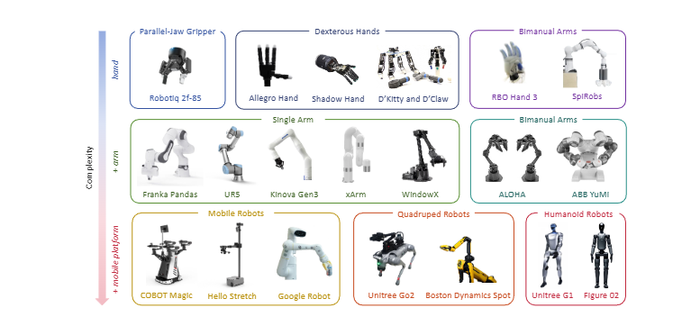
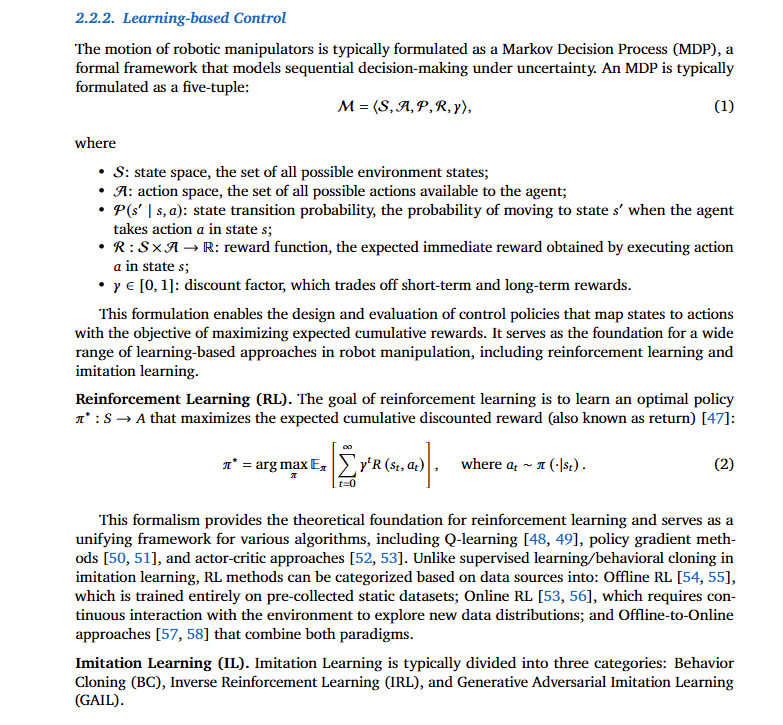
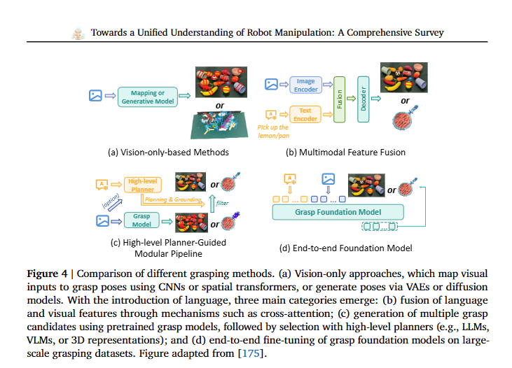
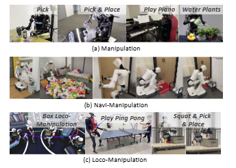
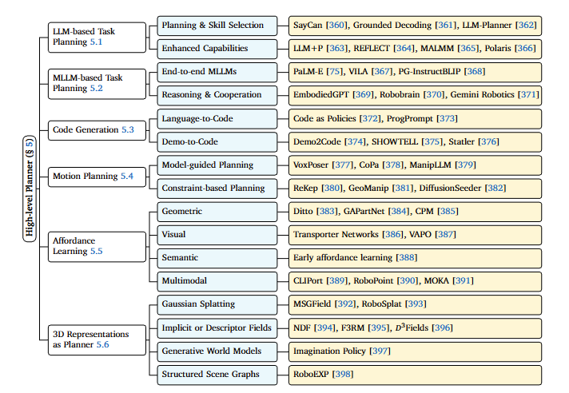
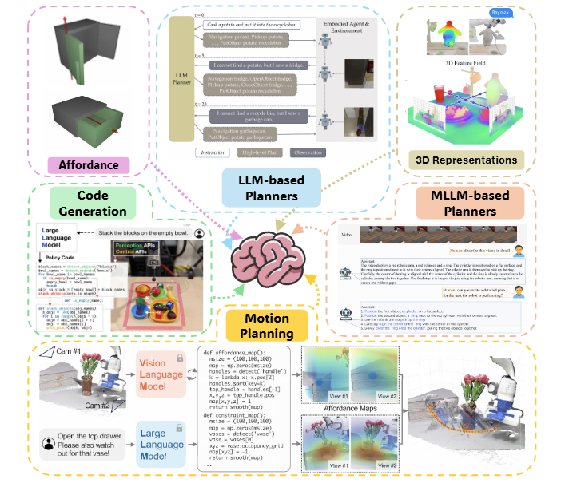
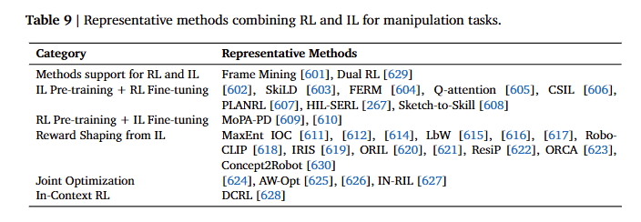

阅读综述 迈向机器人操作的统一理解
机器人操作是具身智能领域一个核心且广泛研究的问题，定义为机器人感知、规划并控制其效应器以物理地与环境交互和改变的能力，例如抓取、移动或使用物体。 其发展历程从 20 世纪末的经典基于规则和非学习控制方法，经过 2010 年代，到基于深度学习的方法，随后是模仿学习（IL） and 强化学习（RL）的广泛应用，以及最近将大型语言和视觉语言模型集成到 IL 和 RL 框架中。
1. 背景
1.1 操作硬件平台
机器人操作可以通过由手、手臂和移动平台等基本组件组成的各种形态实现。这些组件的不同组合定义了特定的形态及其功能能力。例如，将平行夹爪与 Franka Panda 手臂配对可以实现基本的操作任务，如抓取和放置或插入，而将 Unitree G1 人形平台与灵巧手集成则可以实现需要更高灵巧性和协调性的人形级别操作。

- 单臂机器人
- 双臂机器人：常见的双臂机器人系统主要包括 Franka Panda Dual Arm、ALOHA 和 ABB YuMi。这些系统支持双臂协同操作，适合需要比单臂设置更高灵巧性的复杂任务，如双臂组装、传递工具和工具使用等。
- 灵巧手
- 柔顺手
- 移动机器人
- 四足机器人
- 人形机器人
1.2 非学习型与学习型机器人操作控制范式
类似于人类依赖显式规则（例如，在红灯处停车）或通过重复练习获取自适应技能（例如，学习骑自行车），机器人控制范式涵盖从经典的、非学习的、基于模型的规划到基于学习的策略。前者在定义明确的环境中提供可解释性和安全性，而后者在复杂或不确定环境中提供灵活的泛化能力。
1.2.1 非学习型控制
非学习型控制方法使用经典控制和优化技术生成机器人运动，而不依赖数据驱动或学习算法。我们将其包括在内以保持完整性，因为某些研究使用此类方法在深度学习框架内进行低级控制。 基于插值的规划、基于采样的规划、基于优化的规划。
1.2.2 基于学习的控制
机械臂的运动通常被表述为一个马尔可夫决策过程（MDP），这是一个在不确定性下对序列决策进行建模的正式框架。

1.2.2.1 强化学习（RL）
强化学习（RL）的目标是学习一个最优策略，该策略最大化预期积累折扣奖励。分为离线强化学习和在线强化学习。
1.2.2.2 模仿学习（IL）
1.2.2.2.1 行为克隆（BC） BC 可以表述为 MDP 框架，该框架通常不明确指定奖励函数，用于建模顺序动作映射/生成问题。奖励的概念被监督学习所取代，智能体通过模仿专家动作进行学习。
1.2.2.2.2 逆强化学习（IRL） 强化学习逆推理（IRL）旨在恢复解释专家行为的潜在奖励函数，而不是直接模仿动作。通过推断这个奖励函数，智能体可以学习到一个泛化到未见过状态和任务的策略。
1.2.2.2.3 生成对抗模仿学习（GAIL）
1.3 机器人模型
- 视觉模型：为了感知环境，机器人模型通常包含视觉模型以提取信息丰富的视觉特征。
- 语言模型：近年来，特别是从 2020 年左右开始，语言作为一种更自然、更符合人类习惯的模态逐渐显现，推动了语言模型在机器人领域的日益融合。
- 文本条件视觉模型和视觉语言模型（VLMs）。
- 视觉-动作模型和视觉-语言-动作模型。
1.4 评估
- 评估指标：评估机器人性能最常用的指标是成功率，它衡量给定任务是否成功完成。除了基于成功的度量，效率指标如任务完成时间和动作频率也被用来评估机器人完成任务的快速性和有效性。在强化学习（RL）设置中，回报（return）也广泛用作衡量整体性能的指标。
- 模型选择：评估策略因实验设置而异。一种常见的方法是每 k 个 epoch 评估一次模型，并选择成功率最高的检查点。或者，为了更稳定的比较，可以从最终训练阶段选取前 n 个检查点的结果进行平均。这些策略通常用于单任务设置。相比之下，多任务设置通常采用更简单的方法，通过报告最终训练 epoch 或 step 的性能，从而实现更直接和一致的跨任务比较。另一种广泛使用的策略是选择验证性能最高的检查点用于后续测试。
2. 模拟器、基准和数据集
模拟器、基准测试和数据集为推进机器人操作提供了经验基础，支持标准化评估、可重复性和跨方法的公平比较。它们对于评估数据驱动模型中的泛化能力、鲁棒性和可扩展性至关重要。
2.1 抓取数据集
本文主要关注抓取检测和生成任务，目标是直接从感官输入中预测可行的抓取配置。数据标注通常分为两种格式：基于矩形和基于 6-DoF。基于矩形的格式使用五维抓取矩形表示来标记每个抓取，该表示由中心位置（x, y）、抓取器的宽度和高度以及相对于水平轴的方向角定义。相比之下， 6-DoF 格式直接标注末端执行器的六自由度姿态，包括位置（x, y, z）、方向（例如欧拉角或四元数），还可能包括其他信息，如接近方向和抓取质量分数。
2.2 单体操作模拟器和基准
单体操作基准测试专注于特定类型的机器人平台，通常表现为单臂操作器或配备操作器的人形机器人。为了分类的一致性，我们将单臂和双臂系统归为同一形态类型。
- 基本操作基准测试：这些基准测试主要关注使用单臂或双臂机械臂执行相对简单的桌面任务，例如拾取放置、排序、推动、插入、打开、关闭和倾倒。早期的基准测试主要集中于使用强化学习或内在学习在单任务设置中的学习轨迹。最近的努力已转向在日益复杂的场景下评估模型。这些包括支持需要机器人按顺序完成多步操作的长期任务，结合语言提示来指导轨迹生成，在视觉干扰下测试泛化能力，或在未见过任务中测试，提出针对视觉语言模型更公平的评估协议，以及从单臂扩展到更强大的双臂操作设置。最近的基准测试也开始更加重视触觉反馈，以增强在接触丰富的操作场景中的策略学习。
- 灵巧操作基准测试
- 可变形物体操作基准测试：可变形物体操作基准测试为评估涉及布料、绳索和流体等非刚性物体的机器人系统任务提供了结构化环境。
- 移动操作基准测试：移动操作基准测试评估集成移动和操作的系统。典型任务包括协调移动平台（轮式或腿式）与车载操作器来运输物体、导航至目标位置，并在杂乱或空间扩展的环境中交互。这些基准测试对于研究具身智能体在动态和非结构化环境中面临的感知、规划和控制挑战至关重要。
- 四足机器人操作基准测试
- 人形机器人操作基准测试
2.3 跨主体操作模拟器和基准
跨形态操控基准测试支持多种机器人平台，包括单臂、双臂、移动、四足和人形机器人。这些设置旨在评估单个模型是否能在具有不同形态、自由度和控制约束的机器人上持续执行相似任务。
2.4 轨迹数据集
轨迹数据集是按时间顺序组织的集合，捕捉智能体与环境交互时的状态、动作和感官观测的序列。在机器人学和具身人工智能的背景下，这些数据集通常包括机器人关节状态、末端执行器姿态、控制输入和多模态观测（例如 RGB 图像、深度图、力-力矩读数），这些数据是在执行特定任务时收集的。
2.5 体现式问答和可供性数据集
虽然 EQA（环境问答）和可供性理解都需要视觉语义和空间推理，但 EQA 侧重于基于环境上下文的高级问答，而可供性理解则针对与物体进行低级功能性交互，例如抓取或使用工具。这些数据集使机器人模型具备感知和理解物理世界的能力，我们将它们的能力分为三类核心任务类型。 首先，视觉感知任务专注于静态识别视觉信息，使机器人能够识别物体是什么、它的颜色或材质以及它的状态（例如，是打开还是关闭）。这包括物体识别、属性识别、物体状态识别，以及关键点选择以确定可操作的位置用于操作。 其次，空间推理任务涉及理解物体的位置、空间关系和可达性。它们包括 2D/3D 物体检测、物体定位，以及推理机器人与其环境之间的空间关系，例如确定夹爪与目标物体之间的相对方向。 最后，功能性和常识推理任务处理机器人对物体可供性和功能用途的理解——例如，识别盘子刷用于清洁餐具或刀子应该由刀柄握持。这些任务将感知与基于物理交互知识的、具有上下文感知能力的可执行行为联系起来。
3. 操作任务
3.1 抓取
在本工作中所考虑的狭义意义上，抓取特指抓取检测和抓取生成任务。主要关注点在于预测夹爪的位置和方向，以确保在存在各种物体形状、不同姿态和杂乱环境的情况下，能够实现稳定可靠的抓取。
3.1.1 非学习式抓取
早期方法通过显式分析物体几何形状、执行接触驱动的力分析或应用特定任务的规则，结合抓取器模型来生成抓取姿态。然而，由于它们在处理复杂形状、遮挡和未见过物体时泛化能力有限，这些方法逐渐被下文讨论的数据驱动、基于学习的方法所取代。

3.1.2 基于矩形的抓取
虽然它们在视觉上与边界框相似，但它们的表示语义在根本上有所不同。一个抓取矩形被定义为一个 5 维表示，如第 3.1 节所述。后续方法逐步结合了深度学习技术，从基本的卷积神经网络（CNNs）到更高级的架构，如 ResNet、GR-ConvNet 和 Transformer，以及进一步到通过特征融合方法整合文本信息的 CLIP 模型。
3.1.3 6-自由度抓取
基于二维矩形的表示方法，通常假设平行颚爪执行自上而下的抓取，仅限于 2 或 3 个自由度（DoF）。这限制了爪子的方向，并降低了在不规则或复杂环境中的应用性。为了解决这些限制，研究人员提出了 6-自由度抓取表示方法，该方法将抓取定义为一个在三维空间中的完整 6 维姿态。这种表述使机器人能够从任意方向抓取物体，显著提高了灵活性和鲁棒性。6-自由度表示方法在杂乱场景、非平面物体姿态以及涉及复杂几何形状的场景中尤为有益。
3.1.5 基于语言的抓取
近年来，基于语言的抓取技术受到了越来越多的关注，旨在实现针对特定对象和指令引导的操作。现有的方法可以大致分为三类。第一种采用多模态特征融合，其中文本和视觉模态被联合编码，通常通过交叉注意力机制实现。第二种利用现有的抓取模型生成大量抓取候选，然后通过 LLMs 或 VLMs 进行排序或评分，以选择最可靠的抓取。例如，LLMs 可以生成任务特定的描述，而 VLMs 用于视觉定位以计算抓取置信度分数。代表性方法包括 VL-Grasp，该方法利用 VLMs 关注目标对象并生成抓取；OWG，该方法利用基于 VLM 的语义先验进行遮挡下的规划；以及 Reasoning-Grasping，该方法集成了视觉-语言推理以改进对象级理解。其他研究则将 MLLMs 应用于环境感知的错误校正，或学习以对象为中心的属性以实现跨任务的快速抓取适应。 基于可供性的方法也将抓取生成与语言和视觉线索相结合。第三条研究路线直接在具有大规模抓取数据集的抓取基础模型上微调 MLLMs。
3.1.6 挑战
标注困难 不能抓取透明物体 泛化能力差
3.2 基本操作
基本操作是指单臂或双臂机械臂在桌面上执行的比较简单的任务，例如抓取放置、分类、推动、插入、打开、关闭和倾倒。
3.3 精密操作
精密操作是指配备多指或拟人化手部的机器人系统通过复杂的接触交互实现精确和协调的物体控制的能力。
3.3.1 非学习型方法
早期关于精巧操作的研究主要采用非学习方法，包括启发式搜索和约束优化等基于优化与控制的技术。这些方法通常假设能够获取已知的动力学和物体模型，并专注于在物理约束下的轨迹规划。
3.3.2 基于学习的算法
随着强化学习的出现，基于模型和无模型的方法都被应用于灵巧操作。基于模型的方法如 PDDM 利用学习到的动力学进行高效的规划和控制，而无模型方法直接从交互中优化策略，有时通过少量模仿来增强学习，以加速真实手上的学习。
3.3.3 挑战
除了高维控制和接触动力学之外，灵巧操作还面临更广泛的挑战。首先，许多现实世界任务是长时程和组合性的，需要顺序执行细粒度技能。题。其次，由于感知、动力学和驱动之间的差异，仿真到现实的迁移仍然是一个瓶颈。CyberDemo 通过数据增强来缓解这一问题，提高了在领域转换下的鲁棒性。第三，在杂乱或部分观测的场景中，精确感知很困难，遮挡阻碍了物体跟踪。DexPoint 利用点云补全来恢复缺失的几何形状，并增强空间感知。
3.4 软体机器人操作
软体机械手，采用柔性材料或结构制造，非常适合人机协作、在不确定环境中操作以及安全、自适应抓取。
3.4.1 非学习型方法
3.4.2 基于学习的方法
3.5 可变形物体操作
可变形物体操作（DOM）要求机器人感知和控制形状在施加力时会发生变化的非刚性物体。与刚体操作不同，它需要在高维连续状态空间中进行推理，应对不确定的变形动力学，并解释微妙的视觉或触觉线索。诸如衣物折叠、绳索和电缆打结以及食物处理等任务涉及多种变形——包括拉伸、压缩和弯曲——使得 DOM 成为机器人操作中复杂但至关重要的挑战。
3.5.1 非学习型方法
针对 DOM 的方法，如路径规划和基于模型的控制，通常依赖于简化的物理模型或解析解。然而，这些方法在复杂环境中往往难以泛化和实时适应，因此转向了数据驱动技术，如强化学习（RL）、模仿学习（IL）和混合学习控制框架。
3.5.2 学习型方法
Jan 等人提出了一种基于改进 DDPG 算法的深度强化学习方法，该方法从视觉和机器人状态输入中学习，并通过领域随机化实现零样本仿真到现实的迁移。相比之下，模仿学习方法直接利用演示：DexDeform 从人类演示中提取潜在技能，并使用有限的机器人数据进行微调；DefGoalNet 根据状态和上下文从少量演示中预测目标配置；MPD 使用扩散模型生成运动基元。
3.6 移动操作
移动操作是一种结合导航和操作能力的机器人范式，它允许机器人在单个系统中与固定工作空间外的物体进行物理交互。这种集成在感知、规划和控制方面提出了重大挑战，因为它需要协调全身运动、处理长时程任务以及应对动态、部分可观察的场景。
3.6.1 非学习型方法
传统上，移动操作被分解为两个独立的问题：导航和操作。导航通常由经典路径规划器处理，例如基于网格的方法（如 Dijkstra）和基于采样的规划器（如 RRT）。操作通常使用抓取模型、运动基元或基于点云的轨迹规划来解决。一些控制方法对导航和操作进行联合优化。
3.6.2 学习型方法
对于强化学习（RL），王等人使用 RGB-D 输入来估计物体姿态，并训练一个策略，该策略联合预测基础速度、手臂轨迹和夹爪动作。HarmonicMM 通过将视觉和姿态信息集成到一个统一的强化学习框架中来扩展这一方法，而吴等人在地图级别提出空间 Q 值学习用于导航指导。为了改进奖励信号，Honerkamp 等人设计了基于末端执行器可达性的密集奖励，Causal MoMa 引入了考虑因果关系的控制-奖励关系建模来稳定策略优化。 对于模仿学习（IL），MOMAForce 从视觉-力示教中学习运动和力策略，而 HoMeR 将任务分解为全局关键姿态预测和局部细化，以将末端执行器目标映射到全身动作。王等人利用基于 SAM2 的感知进行以对象为中心的 IL，技能转换器将操作视为技能预测问题，学习技能类别和相应的低级动作。 混合方法结合 IL 与 RL 以增强泛化能力。例如，熊等人通过行为克隆初始化策略，并通过在线 RL 进行细化以处理未见过的关节化对象。
3.7 四足机器人
3.8 人类形态操作
人类形态操作涉及具有类人形态的机器人平台，通常包括躯干、双臂，以及简化 2 自由度或完全灵巧的手，下肢实现为移动底座或双足。这些系统设计用于在人类环境中执行物体交互任务。这些系统旨在复制或扩展人类操作能力，实现抓取、举升、工具使用和协调的双手操作等动作。

3.8.1 非学习型方法
早期人形机器人控制主要依赖传统方法，如基于规则和分析的控制器。一些研究还探索了将基于学习的模型集成到控制框架中。
3.8.2 学习型方法
人形操控已从手工调优控制器转向完全基于学习的模型。正如中所强调的，该领域仍处于探索阶段，现有方法大致可分为强化学习（RL）、模仿学习（IL）和视觉语言关联（VLA）框架。
4. 高级规划器
机器人操作中的高级规划通过决定执行哪些动作、按什么顺序执行以及关注环境中的哪些部分，为低级执行提供结构化指导。LLMs 和多模态 LLMs（MLLMs）越来越多地用于任务规划、代码生成甚至运动规划，实现任务分解、技能排序以及基于语言和感知的适应性推理。同时，可供性学习和 3D 场景表示提供了可操作的中间级线索，突出相关区域并指导决策。这些方法共同将高级规划确立为一个灵活的指导层，整合推理、注意力和场景理解，以支持跨不同操作任务的可靠执行。


4.1 基于 LLM 的任务规划
早期的相关工作采用了符号规划和 grounding 范式，其中神经网络将演示和观察映射到表示为谓词真值的符号状态和目标。随着 LLMs 的出现，这种方法在很大程度上被取代。SayCan 通过结合可学习的可供性函数（估计技能成功概率）和基于语言模型的任务相关性，将 LLMs 作为全局规划器，从而选择最有希望的技能来执行。Grounded Decoding 进一步去除了固定的技能集，使 LLM 和 grounding 模型之间能够进行 token 级别的联合解码，以支持开放词汇规划。 这两种方法的剩余局限性是缺乏反馈。为了解决这个问题，Inner Monologue 引入了一个闭环框架，将任务成功、场景描述和人类交互的实时反馈纳入 LLM 推理过程，允许在非结构化环境中动态调整计划。类似的反馈驱动规划也在 LLM-Planner 中进行了探索。 此外，一些研究还解决了将 LLMs 作为规划器使用时的更广泛局限性。 LLM+P 增强了长时程推理和规划能力。REFLECT 引入了一种故障感知机制，用于审查未成功的交互并生成纠正计划。MALMM 探索了多 LLM 协作以改进决策。Polaris 和 Matcha 处理更开放的任务交互，而 RoCo 将 LLM 规划扩展到多机器人协作，进一步贡献了 RoCoBench，这是一个专门为多机器人操作任务设计的基准测试。
4.2 基于 MLLM 的任务规划
传统 LLMs 本质上是单模态的，仅处理文本信息。其他模态（如视觉输入）通常由单独的模型处理，其输出在输入 MLLMs 之前转换为文本。现在越来越多的研究利用这些模型来增强机器人操作，旨在提高性能的同时降低系统复杂性。 在最有影响力的作品中，PaLM-E 在经过筛选的具身数据集上微调视觉-语言模型，并与传统视觉-语言任务共同训练以保留 PaLM 的泛化能力。这使得 PaLM-E 能够作为端到端的决策者，但代价是巨大的数据需求和高计算需求。相比之下，VILA 直接采用 GPT-4V 而不进行微调，利用其强大的视觉基础和语言推理能力实现最先进的结果。一种更轻量级的方法是 PG-InstructBLIP，它尽管这需要大量的数据和高计算需求，通过在标注了物理概念的面向对象数据集上微调 InstructBLIP，从而增强了模型在机器人控制方面的物理推理能力。
4.3 代码生成
尽管使用 LLMs 或 MLLMs 进行任务分解在机器人操作方面显示出巨大潜力，但这些方法在为不同环境提供足够细粒度的控制方面可能仍存在局限性。为了补充任务规划，最近的研究探索通过 LLMs 和 MLLMs 直接生成代码，为连接高级推理和低级执行提供了一种更灵活的机制。总的来说，这些研究强调了代码生成作为任务规划的补充是一个有前景的方向，能够实现更细粒度和更自适应的控制。
4.4 运动规划
与以往的研究不同，另一条研究路线旨在利用 LLMs 和 VLMs 直接规划机器人运动轨迹。
4.5 可供性作为规划器
在机器人学中，可供性代表一个物体或环境相对于智能体能力所提供的交互潜力——门可供打开，表面可供放置。通过将感知与动作内在地联系起来，可供性成为构建更通用和智能操作系统的基本桥梁。
4.5.1 几何可供性
几何可供性理论认为，一个物体的功能可能性由其三维形状、结构和运动学决定。该领域的研究通常专注于直接从几何形状中推断运动学模型，包括部件、关节和运动约束。例如，Ditto 通过物理探测物体并观察其反应来获取关节模型。推广几何可供性的一个核心原则是组合性，它将复杂物体的功能解释为其功能部件的组合。GAPartNet 建立了跨类别的部件分类法，使策略能够跨物体实例泛化技能，例如学习操纵“任何把手”而不是仅操纵“特定茶杯的把手”。基于这一思想，CPM 将复杂动作表示为物体部件之间几何约束的结构化组合，而不是作为整体技能。
4.5.2 视觉可供性
视觉可供性专注于从二维视觉数据（如 RGB 或 RGB-D 图像）中直接学习交互可能性。这种范式通常将操作表述为视觉对应问题，学习生成密集的、逐像素的可供性图，这些图指示了可以执行操作的位置。开创性的运输器网络通过使用空间等变架构，通过特征匹配预测拾取和放置热图，确立了这种方法。这条强大的“在哪里”路径将操作直接建立在像素空间中，而无需显式的物体模型。后来，VAPO 等方法增强了这一思想的可扩展性，这些方法证明了这种视觉可供性图可以从无结构化的“玩耍”数据中以自监督的方式学习，显著减少了对外部专家演示的依赖。
4.5.3 语义可供性
语义可供性研究高级符号概念与机器人动作之间的关系。在现代基础模型出现之前，该领域的研究主要考察人类定义的语义标签，如物体类别或部件名称，如何指导机器人行为。这种视角标志着早期尝试将符号推理与物理交互相结合，为今天的多模态方法奠定了基础。例如，基于可供性的模仿学习的早期工作探索了机器人如何通过将语义属性与观察到的人类动作相关联来获取操作技能。通过将物体部件（如“把手”或“盖子”）与特定的操作轨迹关联起来，机器人能够将学习到的行为泛化到具有相似语义属性的新物体上。尽管受限于对预定义语义类别的依赖，这一研究方向证明了抽象的、人类可解释的知识作为指导机器人学习的强先验的价值。
4.5.4 多模态可供性
可供性学习的前沿正在转向多模态融合，这得益于 MLLMs 的推理和基础能力。通过联合利用视觉外观、语言指令、空间上下文和几何结构，这些方法超越了单模态线索，以建立对交互潜力的整体理解。一条主要的研究方向是将语言与视觉结合，以在场景中将高级指令具体化。例如，CLIPort 引入了一种双流架构，其中语义“什么”路径用于解释语言，空间“哪里”路径用于动作定位，这一原则后来被扩展到物体部件。另一个方向专注于显式的 3D 空间推理，使模型能够捕获距离、方向和布局等度量属性；例如，RoboPoint 将空间语言转化为具体的像素级可供性点。与此同时，交互正在演变为多模态对话，其中视觉提示和交互式纠正框架允许模型消除歧义并从失败中恢复。 最后，一个关键目标是学习跨对象类型和任务的统一且可迁移的可供性表示，朝着通用可供性推理的方向发展，以实现开放世界环境中的鲁棒操作。
4.6 3D 表示作为规划器
近期关于操作的研究越来越集中于将感知转化为可执行提案的 3D 场景表示，而不是完整的任务计划。两种主要趋势推动了这一方向：(1) 可编辑、实时的高斯喷溅（GS）变体，将几何形状与语义和运动相结合，以实现场景编辑，以及(2) 隐式或描述字段，将 2D 基础模型中的特征提炼到 3D 中，以实现对应关系和语言基础。
5. 基于低级学习的控制
基于学习的底层控制专注于机器人如何将感知转化为可执行动作，为将高级规划转化为物理执行奠定基础。虽然高级规划决定做什么以及按什么顺序做，例如任务分解、技能排序或目标推理，但底层控制通过学习精确的视觉运动映射来确定如何行动，从而在动态环境中实现稳健的操作。这两者本质上互补：高级规划者提供结构化的意图和语义上下文，而底层控制器将这些计划转化为连续的、动态稳定的运动指令。在这个框架内，模仿和强化学习等学习策略定义了如何学习的总体范式。输入建模，它决定了使用哪些感觉模态以及如何对它们进行编码；潜在学习，它专注于如何将感知表示为紧凑且可迁移的嵌入；以及策略学习，它定义了如何将潜在表示解码为可执行的动作。 综合来看，这一新视角为底层控制提供了一个统一的观点，将感知、表示和决策整合在一起，并连接了高级推理与真实世界的机器人执行。
5.1 学习策略
5.1.1 强化学习
在机器人操作领域，强化学习（RL）已成为获取复杂技能的核心范式。通过利用高维感知输入（例如视觉或本体感觉）和奖励信号作为反馈，强化学习使智能体能够通过与环境的试错交互来学习控制策略。
5.1.1.1 无模型方法
在机器人操作中，无模型方法指的是不依赖环境动力学显式模型的强化学习算法。相反，它们通过与环境进行试错交互直接学习策略，并由感知输入和奖励信号进行引导。无模型方法的主要优势在于它们能够处理高维非线性任务，而无需精确的系统建模，因此非常适合复杂的操作场景。然而，这些方法通常存在样本效率低和数据需求量大的问题。 5.1.1.1.1 预训练中的强化学习 受益于基础模型研究的进展，预训练范式在机器人强化学习领域也展现出显著潜力，为克服传统强化学习方法在样本效率、泛化能力和可扩展性方面的局限性提供了新方案。 5.1.1.1.2 微调中的强化学习 基于预训练的优势，针对下游任务的高效微调已成为一个关键的研究方向。 5.1.1.1.3 强化学习用于 VLA 模型
5.1.1.2 基于模型的方法
基于模型的方法指的是利用环境动力学的显式或学习模型来促进策略学习的强化学习方法。通过预测状态转换和奖励，这些方法能够实现规划、样本高效的策略优化以及长时程任务的推理。与无模型方法相比，基于模型的方法通常具有更高的数据效率和更好的可解释性，但其性能受限于动力学模型的准确性，这在高维或接触丰富的操作场景中难以获取。 5.1.1.2.1 想象力轨迹生成 5.1.1.2.2 规划 强化学习中的样本效率也可以通过将其用于规划能力来提高，其中策略利用模型生成改进的轨迹并促进策略改进。 5.1.1.2.3 可微分的强化学习 当环境动力学和奖励函数是可微分的时，可微分的强化学习适用，允许通过可微分的预期回报直接优化策略参数。虽然真实世界数据不具备这一特性，但可以使用可微分的物理模拟器或基于神经网络的动力学模型来生成轨迹。因此，可微分的强化学习可以被视为基于模型算法的广义变体。
5.1.2 模仿学习
与强化学习（RL）相比，IL 避免了需要昂贵的奖励设计和广泛的环境交互。 早期研究基于控制理论框架，感知-动作整合有限。随着时间的推移，该领域采用了 ResNets 和 Transformers 等深度架构，后来整合了大规模视觉和多模态预训练，最近又集成了大型语言和视觉模型。当前进展强调多模态融合、高效和鲁棒策略学习、可扩展数据利用以及生成式建模。展望未来，有前景的方向包括：结合 VLA 模型和 LLMs 的机器人学基础模型驱动的 IL；基于 do-calculus 和反事实推理的因果 IL；跨任务和实体的泛化和迁移；通过认证和运行时监控实现安全可靠的部署；以及更高效的人机交互以减少学习过程中对人类反馈的依赖。
5.1.2.1 基于动作的模仿
5.1.2.1.1 动作级强化学习 动作级强化学习专注于直接从动作或轨迹级别的专家演示中学习控制策略。这些方法不推断高级目标或任务抽象，而是将观察到的状态映射到可执行的动作、姿态或运动基元，从而强调精确的电机控制、轨迹生成和操作稳定性。 5.1.2.1.2 行为克隆 从动作学习的 BC 基于专家状态-动作对，学习从状态到低级控制命令的直接映射。BC 从姿态中抽象出低级控制，通过预测 SE(3)中的末端执行器姿态，将跟踪交给逆运动学或力控制器。这种几何感知的公式提高了精度、可迁移性和鲁棒性。 5.1.2.1.3 基于运动原语（MP）的 IL 运动原语（MPs）将演示编码为参数化轨迹或动力系统，提供一种紧凑且可泛化的技能表示。动态运动原语（DMPs）引入了使用稳定吸引子系统来再现和适应演示动作的思想。这后来被扩展到概率运动原语（ProMPs），它对轨迹进行建模以处理不确定性和技能混合。为了进一步捕捉时间变化，引入了隐式半马尔可夫模型（HSMMs）用于分割和序列化技能。 5.1.2.1.4 基于搜索的模仿学习 它将模仿学习视为轨迹空间或策略空间中的搜索问题。早期研究通过将模仿学习建模为对最优策略的搜索来开创了模仿学习领域。随后，这种方法在搜索学习（L2S）框架内被形式化，利用函数梯度优化或结合世界模型。 5.1.2.1.5 基于优化的模仿学习 它将模仿学习表述为一个优化问题，通常整合轨迹优化、约束满足或可微规划。通过优化一个结合了模仿损失与任务特定约束的目标函数来获得策略。早期工作将模仿学习与任务约束和控制优化相结合，随后出现了结合时序逻辑以确保安全且可解释执行的方法。近期的研究利用可微轨迹优化进行端到端的视觉运动策略学习，以及使用连续时间动力学表述如神经常微分方程进行长时程、多技能操作。 5.1.2.1.6 基于奖励的强化学习 基于奖励的强化学习旨在恢复一个能够解释专家演示的底层奖励或成本函数，并随后在这个学习到的目标下优化策略。与直接行为克隆不同，直接行为克隆以监督方式拟合动作映射，基于奖励的强化学习通过强化学习优化推断专家为何能最优行动，从而实现更通用、可解释和适应性更强的策略。 5.1.2.1.7 逆强化学习 它寻求一个奖励或成本，使得专家轨迹接近最优，然后通过规划或强化学习在学习的目标上推导出一个策略。在操作中，逆 KKT 将 IRL 实例化为逆最优控制，通过在离线演示中强制执行 KKT 条件来恢复任务成本和主动约束，然后使用恢复的目标进行规划，这种公式非常适合接触丰富的技能 5.1.2.1.8 对抗模仿学习（AIL） 已从基于 GAN 的占用度测量匹配发展到更样本高效、视觉鲁棒和可扩展的公式。该范式由 GAIL 建立。后续工作通过学习对比或世界模型潜在空间来提高感知和表示的鲁棒性，适用于仅视频和跨域观察。关于奖励建模和判别器设计的研究用更平滑和更有信息量的替代品（如基于扩散的目标）替换了脆弱的判别器，并集成了人类偏好信号。通过离线预训练后进行轻量级在线微调、判别器引导的基于模型的离线学习和带校正的轨迹级增强来提高效率。 5.1.2.1.9 IL 的表示学习 IL 的表示学习专注于从演示中提取结构化、任务相关和可泛化的表示，以提高策略效率、鲁棒性和适应性。这些方法不是直接拟合输入-动作映射，而是旨在揭示专家行为背后的潜在因素、时间依赖性和上下文线索，实现更可扩展和可迁移的操纵学习。 5.1.2.1.10 IL 的潜在学习 关于模仿学习中的潜在结构和泛化最新进展，融合为三条主线。首先，潜在表示塑造减少冗余并强化任务相关性：行为克隆的信息瓶颈观点将输入压缩为任务充分的潜在表示，任务相关的对抗性 IL 将判别器约束为避免虚假线索，多意图模型捕捉行为多模态性，黎曼公式为姿态和方向提供几何感知表示。其次，分布级泛化通过信息论和 PAC-Bayes 分析得到阐明，这些分析产生明确的泛化界限和训练指导，而接触丰富的双臂操纵的系统研究突出了力或力矩信号在扰动和多接触机制下对鲁棒性的价值。 第三，时间和记忆增强提高了从有限演示中的稳定性：演示策略和单视图视觉管道拓宽了监督来源，而记忆一致的神经网络在原型记忆周围施加了硬约束，以通过可证明的次优性界限减轻累积误差。 5.1.2.1.11 情境模仿学习（ICIL） 用演示作为提示的执行来替代参数更新：策略在推理时读取少量演示并立即行动。当前系统通过图结构生成来实例化这一想法，该生成以演示图为基础以跨任务泛化，通过传感器运动流的自回归下一个标记预测，在真实机器人上零样本运行，以及隐式图对齐，从少量示例中恢复与任务相关的物体关系。 5.1.2.1.12 交互式模仿学习（IIL） 在操控领域，IIL 已围绕三个主题形成共识。首先，通过视觉远程操作或语言传递的人回路校正提高了数据效率和鲁棒性，而基于 LLM 的教师开始通过在训练过程中生成和评价策略来替代昂贵的人工监督。其次，干预预算分配和控制切换通过在新颖或危险状态下查询、最小化上下文切换、在失败后协调人策略协作以及将指导转向状态空间反馈来减少监督负担。第三，部署时学习和安全性在自主性与监督之间形成闭环。Sirius 结合了人机分工的加权行为克隆以持续改进，并基于模型的运行时监控预测故障并触发交互以安全执行。这些方向共同将 IIL 从实验室式的场景式教学转向低负担、在职学习并配备安全防护，同时为大规模 AI 回路监督敞开了大门。
1.1.1.2 从观察中模仿
模仿学习（LfO）仅假设能够获取专家演示的形式为状态或视觉轨迹，而无需相应的专家动作标签。在这种设置下，机器人必须仅从观察到的状态转换（例如视频、运动捕捉）中推断策略，通常不知道执行了哪些控制命令。 5.1.1.2.1 从观察中获取奖励或占用恢复 此类 LfO 方法直接从视频或状态轨迹中推断奖励、软 Q 值或占用度量，然后使用强化学习或规划优化策略。这避免了动作标签，容忍时间错位和次优演示，并支持跨域迁移。 5.1.1.2.2 状态或表示对齐与匹配 第二种方法摒弃了显式奖励，转而跨视角和化身匹配状态或潜在表示，通常借助价值或语义预训练或结构线索。例如包括离线 LfO 的双重公式、价值隐式和语言-图像预训练提供可迁移的视觉先验、物体操作交互场模板、选择性或遍历匹配过滤模仿内容、图结构视觉模仿以及大规模自然场景对齐研究。 5.1.1.2.3 基于模型和物理的 LfO 这一方法通过可微模拟器或模型识别将视觉演示与动力学和接触关联，在控制优化前将视频投影到物理一致的轨迹。可微物理 LfO 和视觉演示的接触感知学习展示了物理先验如何提高接触丰富操作中的样本效率和可靠性。 5.1.1.2.4 从观察和目标驱动 LfO 中获取 BC 策略直接从视频中提取关键点、姿态、目标或命令序列，并训练或调整可执行控制器，而无需动作标签。最近的系统通过关键点统一观察和动作，使用眼在手的人类视频进行泛化控制，从被动人类视频中实现零样本操作，从视觉序列中学习传感器运动学原语，并基于目标推理来从视觉中发出命令。
5.1.3 桥接强化学习和模仿学习

5.1.4 使用辅助任务进行学习
学习辅助任务是指通过引入除主要操作目标之外的额外自监督或弱监督目标来增强策略学习的训练范式。这些辅助目标鼓励模型捕获环境、动作和目标的结构化表示，从而提高样本效率、泛化能力和鲁棒性。
5.1.4.1 世界模型
世界模型（WMs）已成为机器人操作的核心范式，支持预测规划、策略泛化和数据高效控制。 5.1.4.1.1 生成式视觉世界模型 生成式视觉世界模型 learning 表示环境动态，通过综合基于过去状态和动作的未来视觉观察。通过将视频或图像生成器视为交互式环境，此类模型能够在视觉或潜在空间中进行展开，并可用于规划和策略学习。 5.1.4.1.2 3D 或物理一致性世界模型 与纯粹基于视觉的世界模型不同，3D 或物理一致性方法明确地将几何形状和动力学嵌入到预测过程中，从而实现物理上合理的模拟和控制。一项核心工作基于基于高斯的表达方式，其中动态高斯喷溅从渲染扩展到操控： 5.1.4.1.3 使用世界模型进行策略学习 世界模型不仅作为预测环境，还提供结构化的接口用于策略学习和长时程控制。一个关键方向是离线到在线的适应，其中 MOTO 和 FOWM 等方法在大型离线数据集上进行预训练，然后在真实世界中微调策略。 5.1.4.1.4 系统化与部署 超越单机器人环境，近期研究重点在于将世界模型扩展至舰队和平台级别的部署，使其在现实世界机器人中更加实用和易用。
5.1.4.2 图像或视频预测
纯图像或视频预测方法在机器人学中合成未来的视觉信号或目标图像，而无需学习显式的动作条件正向动力学。
5.1.4.3 视觉引导目标提取
视觉引导目标提取是指直接从视觉输入中提取与任务相关的信息，以支持操作任务。例如包括目标检测和分割、视觉跟踪和光流，这些都提供结构化的线索来指导机器人的动作。 5.1.4.3.1 检测与分割 这些方法将原始像素转化为目标指示符号，例如表示要操作什么或在哪里操作的稀疏目标提议，以及捕捉精确几何形状的密集掩码。 5.1.4.3.2 注视 人类注视，无论是测量还是预测，都作为一种需要很少监督的紧凑注意力先验，告诉策略应该注视什么以及何时注视。首先，注视点感知会裁剪或重新加权注视点周围的特征，以实现高精度控制和更好的操作样本效率。其次，注视作为一种鲁棒性和小样本先验，抑制干扰并提高有限演示下的泛化能力。 5.1.4.3.3 关键点 基于关键点的目标提取将任务相关的地标在图像或 3D 空间中编码为紧凑的、相对于对象的表示，策略可以直接消费这些表示。与原始像素相比，关键点提供了几何结构、可解释性，并提高了跨视角和场景的泛化能力。 5.1.4.3.4 关键补丁 CALAMARI 通过预测图像平面上的语言条件接触形成图来将动作形式化为接触本身，因此策略决定在表面上的何处进行接触与其选择单个点，架构在接触的自然边界处分解感知和控制。多模态空间动作模块将逐像素动作预测与观察结果对齐，然后低级控制器优化运动以保持接触同时避免穿透。通过利用视觉语言预训练来增强空间特征，CALAMARI 提高了接地效果和仿真到现实的迁移能力，并在清扫、擦拭和擦除等接触丰富的任务上表现出色，从指令到控制提供了清晰的键补丁界面。 5.1.4.3.5 关键姿态 基于关键姿态的目标提取选择一小部分 SE(3)锚状态，这些状态总结了任务进度并为控制提供了精确的几何目标。与像素特征或稀疏关键点相比，关键姿态携带子目标语义，标记完成事件，并减少多阶段操作中的累积误差。 5.1.4.3.6 航点 基于航点的目标提取将操作总结为任务空间中的一系列可执行的子目标，通常是几个连接感知和控制的 SE(3)姿态。通过将“要实现什么”与“如何移动”分离，航点减少了协变量偏移，简化了长时程规划，并为运动控制器和一致性策略提供了一个稳定的接口。 5.1.4.3.7 可视化追踪 可视化追踪方法将人类意图编码为可绘制的原始元素，如草图、轮廓和网格，这些元素与场景对齐，并由策略作为轻量级目标载体所消耗。与关键点或离散航点相比，追踪在低标注成本下提供了更高带宽的语义指导，并且既可作为训练时的辅助监督，也可作为推理时的条件。 5.1.4.3.8 视觉跟踪 视觉跟踪方法通过时间编码场景点的身份一致轨迹，并将其用作连接感知与控制的动作或指导空间，具有低监督成本。轨迹可以直接作为跨主体迁移的动作，从人类视频中预测二维运动轨迹，然后将其提升到六自由度机器人轨迹，在现实世界中表现出强大的少样本性能。 5.1.4.3.9 流 基于流的目標提取将运动场视为感知和控制之间的接口，指定物体应该如何运动，而不仅仅是它们在哪里。光流使用来自没有动作标签的视频的密集二维对应关系来监督策略或为规划和控制提供先验知识。动作流在时间和空间中编码策略或任务条件下的运动场，可以与记忆融合或通过扩散生成。以物体为中心的流在操作物体或部件上定义运动，实现跨身体转移甚至奖励塑形。三维流将信号提升到场景流、体素或点云中，并通常通过语义增强它们，作为姿态感知先验或世界模型的潜在表示。
5.1.4.4 基于文本的目标提取
近年来，基于文本的目标提取技术取得了显著进展，其重点已从简单的语言条件转向将指令明确解析为可执行目标、恢复策略或推理步骤。
5.1.4.5 对比学习
5.1.4.6 重建
重建已成为机器人操作领域的一种强大的自监督预训练策略，涵盖了掩码建模和生成式重建两种范式。其核心思想是从部分输入中恢复或预测缺失或新颖的观测结果，例如掩码像素、标记或三维表示。通过迫使模型推断环境的底层结构和动作空间，基于重建的预训练能够促进丰富且结构化表示的学习。
5.2 输入建模
输入建模定义了机器人如何通过各种感觉模态感知和表示世界，决定了使用哪些输入以及如何在将其输入控制或策略模型之前进行加工处理。有效的输入建模确保感觉数据在保持必要空间、时间以及语义信息，从而实现跨多种操作任务的稳健感知、推理和控制。
5.2.1 视觉动作模型
视觉动作模型旨在直接将视觉感知与动作生成相结合，使智能体能够对复杂环境进行推理并执行目标导向行为。
5.2.1.1 2D 视觉作为输入
视觉动作模型的发展主要集中在使用 2D 视觉数据作为基础感知输入，这些数据通常来自多视角 RGB 相机。该领域的模型架构可以大致分为三种范式：基于卷积的、基于 Transformer 的和基于扩散的。
5.2.1.2 3D 视觉作为输入
为了提升模型的立体感知能力，越来越多的视觉动作模型开始关注现实世界的三维视觉信息。通过利用多视角变换，RVT 和 RVT-2 明确提升了任务执行效率和泛化能力，从而改善了在现实应用中的性能。
5.2.2 VLA
近期视觉-语言-行动（VLA）模型的发展，为将多模态感知映射为可执行的机器人行为建立了一个统一的范式。与早期的纯视觉或语言条件控制器相比，VLA 模型在一个单一架构中集成了语义接地、空间推理和序列行动生成。